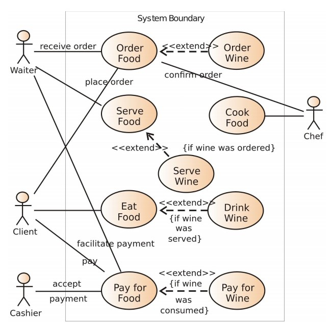

přemnožily se projekty, které nemohly být b vyřešeny
Software byl nespolehlivý, docházelo k havariím
Byla třeba disciplína, která by uvedla
standard pro vývoj software a jeho dokumentaci , jak
pro uživatele, tak pro vývojový tým
Definice pojmu Softwarové inženýrství
Zabývá se zavedením a používáním řádných inženýrských
postupů při vývoji software
Cílem je vyvinout ekonomický a spolehlivý software pro
dostupný hardware
Softwarový produkt
Je počítačový program, který v sobě zahrnuje dokumentaci jak
uživatelskou i vývojovou
Dá se rozdělit na:
GENERICKÝ → pro trh (např. Word, Excel,
Windows, Skype)
ZAKÁZKOVÝ → na požadavky zákazníka (např.
Interní systémy)
Etapy vývoje softwarového projektu
Koncepce - úvodní studie
Základní popis softwaru
Základní cíl nebo účel projektu
Požadavky pro daný systém
Shrnout obecné funkce
Rozsah, Cíloví uživatelé, Podmínky pro
omezení vývoje
Naznačit předpokládaný časový harmonogram
Analýza - požadavky a návrh
Implementace - Kódování
Testování
Používání a údržba
Etický kodex softwarového inženýra
Software nesmí být v rozporu s veřejným zájemcem
Jednat vždy v
nejlepším zájmu klienta a zaměstnavatele, pokud není
v rozporu s předchozím bodem
Mít jistotu, že
produkt a jeho změny jsou na nejvyšší možné úrovni
Zachovat nezávislý profesionální úsudek
Manažeři v oblasti SWI mají propagovat etický kodex při
vývoji
Dbát na reputaci oboru v souladu s veřejným zájmem, ale ne v
rozporu s ním
Softwarový proces
Definuje kdo, co, kdy vykonává a rozlišuje přitom zákazníka,
dodavatele a uživatele. Rozděluje se na:
Analýzu a specifikace
Analyzuje rizika a sbírá požadavky
Příprava akceptačního testu
Architektonický návrh
Koncept systému
Rozklad systému na menší části
Postup nasazení a plán testování
Implementaci a testování
Kódování, tedy tvorba samotného softwaru v
kódu
Testování jednotlivých částí systému
Integraci a testování
Spojení částí systému v jeden celek a jeho
následné testování
Akceptační testování a instalaci
Ověření zákazníka, že systém funguje podle
předpokladů
Provoz a údržbu
Oprava chyb, které vzniknou po nasazení
Rozvoj podle měnících se požadavků
Vývojové modely
VODOPÁDOVÝ MODEL
Dělí projekt do nepružných fází
Neumožňuje reagovat na měnící se požadavky
Vhodný pro projekty, při kterých jsou
pevně definovány požadavky
Využívá se především při vývoji
podsystémů u velkých projektů
PŘÍRŮSTKOVÝ MODEL
Software není dodán jako celek, ale je dodáván po částech
Umožňuje
reagovat na požadavky dodávané před každou částí
Zákazník může hodnotit funkcionalitu systému po každé dodané
části a dostává funkční systém o něco dříve
SPIRÁLOVÝ MODEL
Je reprezentovaný spirálou, jedno otočení spirály
představuje jednu vývojovou fázi projektu
Spirála nemá dané specifické rozdělení fází, lze modifikovat
dle potřeby
Výhody spočívají v možnosti reagovat na měnící se požadavky,
při každém otočení spirály ( jedna fáze nastává víc než
jednou za dobu vývoje ) a v tom, že po každé otočce přináší
tento model prototyp softwaru
Analýza – stanovení cílů, alternativ a
rozsahu iterace
Vyhodnocení – vyhodnocení alternativ,
identifikace a řešení rizik
Vývoj – vývoj produktu a kontrola očekávaných
výsledků
Plánování – plán pro příští iteraci
BUSSINESS PROCESY
Popisují fungování firmy a postup
jak řeší situace a úkoly
Určují interní a externí procesy nebo vazby
Popisují se nejčastěji pomocí BPMN (Bussiness Process
Model Notation), méně častěji pomocí diagramů UML
Požadavky na software
Určují funkcionalitu vytvářeného systému
Vykomunikována se zákazníky a uživateli
ještě před zahájením vývoje
Jsou následněnesrovnalosti a nejasnosti
analyzovány a doplněny o potřebné funkce nebo jsou
odstraněny nesrovnalosti a nejasnosti, které by
vpozorování průběhu vývoje mohly dobdotazníkyžitpřímém
pohovoru se zadavatelem
Požadavky se dají sbírat spoustu způsoby, například pomocí
pozorování, přes dotazníky nebo při
přímém pohovoru se zadavatelem
FUNKČNÍ POŽADAVKY
Funkce a služby systému
Může se jednat například o výběr zboží nebo přidaní
zboží do košíku u e-shopů.
NEFUNKČNÍ POŽADAVKY
Nesouvisí s funkcemi z pohledu uživatele
Patří sem
spolehlivost a robustnost systému, výběr
programovacího jazyka nebo typ aplikace
spolehlivost a robustnost systému, výběr
programovacího jazyka nebo typ aplikace
(webová vs desktop vs mobilní)
DOMÉNOVÉ POŽADAVKY
Vycházejí z aplikační domény
Mohou být funkční nebo mimofunkční
Příkladem je například
čas potřebný k doručení zásilky, nebo zpoždění
při její dopravě
Jazyk UML
Jazyk UML pochází z anglické zkratky Unified Modeling
Language
OMG (Object Management Group), 1997
Obrázkový jazyk, slouží k vytváření softwarových plánů
Slouží k
vizualizaci, specifikování, sestrojení a dokumentování
SW systému, není však omezen pouze na SW produkty
(výrobní linky, managment, ...)
Nejedná o programovací jazyk, ale mohou být však
využity nástroje, které na základě UML dokáží generovat
programový kód
Úzce spjat s
objektově orientovanou analýzou a návrhem
Modeluje systém jako kolekci objektů, které spolupracují na
realizaci potřeb uživatele
Statická struktura – jaké objekty jsou
důležité
Dynamické chování – životní cyklus objektů,
jejich interakce k dosažení cílů
UML lze rozdělit na tzv. stavení bloky, činnosti a
architekturu
Prvky – elementy diagramů
Vazby – spojnice mezi elementy
Diagramy – skupiny prvků a vazeb, pohledy na
model
Vývoj systémů
Protože změny v hardwaru jsou obtížné (a nákladné), tak se
vše řeší
přírůstkovým vývojem softwaru
Software může pomoci odstranit některé chyby v hardwaru
Proces vývoje systémů nutí k úzké spolupráci vývojáře z
různých oblastí (hw x sw)
Důležité je si správě rozumět, každá z disciplín může
využívat jiný slovník
Je tedy potřeba dost času na „dohodnutí se“
Objekty a objektový přístup
V tomto přístupu k
programování se programátor snaží popsat svět jak ho
vidí on
→ píše program z pohledu člověka
Základní jednotka objektového programování je objekt
Princip využívání tzv. Zpráv (gettery a settery)
Jde o to, že se přímo nezískává daná hodnota, ale
používají se k tomu speciálně navrhnuté operace
Př. → v bance →
vypisVlastika(), vklad(vlozenaCastka),
vyber(vybiranaCastka), vypisCastky(), apod.
Jedná se o entitu, která odpovídá objektům z reálného světa
Například Pes, pes má 4 nohy, hlavu, oči a může mít
i jméno, ještě k tomu štěká
Objekt by se v programovaní popsal Atributy
(vlastnostmi objektu) a Metodami (schopnostmi
objektu)
Z těchto objektů programátor postupně vytváří
hierarchii objektů, které mezi sebou mohou
komunikovat a v hierarchii na sobě být nějakým
způsobem závislé
Lze zde popisovat vlastně celé OOP (modifikátory
přístupu, instance, objekt, třída, dědičnost
(specifikace/zobecnění), relace (primární a cizí klíč)
Realizace UC ("use case")
Typicky seznam akcí nebo událostí, které definují interakci
mezi uživatelem a systémem, pro který UC vytváříme
Zorganizují se tak funkční požadavky
Definují se výsledný produkt daných interakcí, včetně
všech akcí potřebných k dosažení výsledku
(scénáře, které mohou nastat)

Návrh uživatelského rozhraní
Mělo by plnit předpoklady a požadavky uživatele
Uživatel pracuje většinou pouze s UI
Špatný návrh může vést k chybám a pozdějšímu
nevyužívání sw dalšími uživateli
Návrháři UI si musí být vědomi fyzických, mentálních omezení
uživatelů a principu, že uživatelé dělají chyby
Lidský faktor v návrhu UI
Krátkodobá paměť
Lidé jsou si pamatují cca 7 údajů –
informací. Když je více údajů, zvyšuje se
šance na chybu obsluhy
Lidé dělají chyby
Když uživatel způsobí chybou nějakou zprávu,
hlášku, zvýší se jeho stres a může udělat
další chybu →
je třeba vhodná volba komunikace a
chybových hlášek
Lidé jsou různí
Statické UI
Obsah je prezentován
vždy stejně bez ohledu na uživatele
Dynamické UI
Obsah se může prezentovat
každému uživateli jinak → na tomto principu
fungují veškeré
webové aplikace, sociální sítě, apod.
Vizualizace dat
Data lze zobrazovat různými způsoby: Grafy, obrázky,
texty
Chybové hlášky
Jelikož lze od uživatele očekávat chyby,
je potřeba od něj poté vyžádat jejich opravu
Zdvořilost, výraznost, návrh opravy, příklady
Testování
Každé UI by se mělo testovat přímo na uživateli
Často se předává seznam ve kterém jsou vypsány
požadavky, které po uživateli chceme
Ten se je pak snaží provést a sledujeme, jak
uživatel postupuje
Výstupem může být počet chyb, videozáznam,
eyetracking záznam, záznam pohybu myší
Příklady
Přímý výběr
např. ikony ve Windows
Jednoduchost. Vhodné pouze tam, kde existuje
grafické rozhraní.
Výběr z menu
Výhodnost pro předcházení chybám
Pomalé pro zkušené uživatele
Nejvíce využívané
Vyplňování formulářů
Vhodné pro vstup dat
Vstupy jsou kontrolovatelné
Různé systémy např. skladové apod.
Příkazový řádek
Rychlý a flexibilní přístup
Obtížné na naučení
Operační systémy apod.
Webové UI
Prvky formuláře mohou být menu, textové políčka,
nabídky, zaškrtávací políčka apod.
Bezpečnostně kritické systémy
Kritický systém je takový systém jehož selhání může vést k
ekonomickým ztrátám, poškození zařízení nebo zdraví
Provozní spolehlivost a dostupnost jsou naprosto nezbytné
ale ne samy o sobě dostačující podmínky
Typy selhání BKS:
Selhání hardware
špatný návrh, výrobě, krátká životnosti
Selhání software
Chyby ve specifikaci, návrhu nebo
implementaci
Selhání obsluhy
Operátor udělá chybu,
nejčastější příčina
Provozní spolehlivost
Skládá se čtyřech částí:
Dostupnosti
funkčnost v daném časovém termínu
čím déle funguje, tím je dostupnější
Spolehlivosti
pravděpodobnost selhání
čím menší pravděpodobnost, tím větší
spolehlivost
Bezpečnosti
systém dokáže pracovat a nezpůsobit během
svého fungování nebezpečí
Zabezpečení
Schopnost systému chránit se před nehodami
nebo externím útokem
Důležité u systémů napojených na internet
Podpůrné parametry:
Opravitelnost
Je možné systém opravit co nejrychleji a
nejlépe
Udržovatelnost
Je možné systém rozšiřovat, uzpůsobovat
novým požadavkům
Možné následky v chybách v BKS
Potlačení služby (např. DDOS)
Běžná funkce systému není možná, z důvodu přetížení.